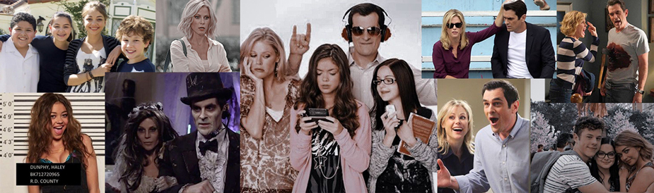

Familia Dunphy
Phil Dunphy es un agente de bienes raíces a quien le apasionan los trucos de magia, y está casado con Claire Dunphy, hija de Jay Pritchett y empresaria en la compañía familiar, con quien tiene tres hijos. Él se autodenomina como un papá “cool”. La hija mayor de la familia es Haley, conocida por ser bastante rebelde, extrovertida e irresponsable, aunque también, es cariñosa y empática por su familia y amigos. Alex, por el otro lado, es la más madura e inteligente entre sus hermanos, sin embargo, la más insegura. Su constante preocupación por ser la mejor académicamente, al igual que su madre Claire le ha traído mucho estrés. Luke, el hijo menor de los Dunphy, es un adolescente revoltoso, pero de buen corazón, comparado constantemente con Alex en sentido de inteligencia. Su padre se considera su mejor amigo, aparte de Manny Delgado.
